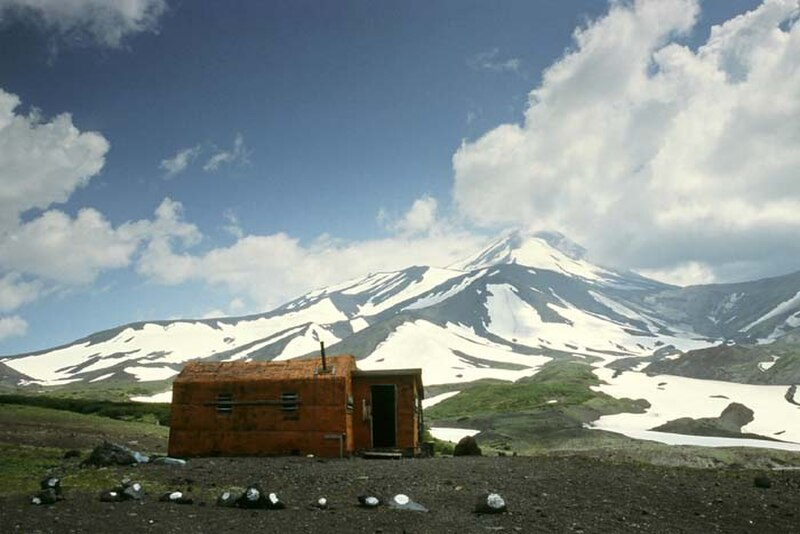

Der Ausbruch des Awatschlinsky auf der russischen Halbinsel Kamtschatka hat höchst bedrohliche Ausmaße angenommen.[1] Wie die Wiener Zeitung meldet, begann die vulkanische Tätigkeit bereits am 28. März und erreichte am neunten dieses Monats ihren unheilvollen Höhepunkt.[1] Fortwährend sind aus dem Innern des Berges heftige Detonationen zu vernehmen.[2] Gewaltige Mengen glühender Steine werden gleich Feuersäulen mehrere hundert Meter in die Luft geschleudert. Gleichzeitig wälzen sich mächtige, leuchtende Lavaströme aus dem Krater die Berghänge hinab.[2] Nachts ist die gesamte Umgebung durch die steil in den Himmel schießenden Flammengarben weithin erhellt.[1] Das beängstigende Naturereignis wird von fortwährenden Erderschütterungen und anhaltendem unterirdischen Grollen begleitet, das die Einwohnerschaft der Halbinsel zutiefst beunruhigt.[2][1] Erschwerend kommt hinzu, dass ungeheure Aschenmengen die Luft verfinstern. In einem gewaltigen Umkreis von bis zu 900 Kilometern bedeckt die Asche das Land stellenweise mehrere Fuß hoch.[2][1] Der feuerspeiende Berg befindet sich lediglich 30 Kilometer von der Hafenstadt Petropawlowsk entfernt.[2][1] Dennoch sind trotz der zerstörerischen Kräfte der Natur bisher keine Todesopfer zu verzeichnen.[1] Nach Berichten der Kölnischen Zeitung datiert der letzte vergleichbar starke Ausbruch dieses Vulkans aus dem Jahre 1909.[2]
Naturkatastrophe: Gewaltiger Vulkanausbruch auf Kamtschatka
Der Awatschlinsky auf dem Höhepunkt seiner Tätigkeit — Ascheregen und glühende Lavaströme — Bisher keine Todesopfer
Petropawlowsk, 11. April.

Historische Einordnung
Der Awatschinski (in historischen Zeitungen oft Awatschlinsky genannt) gehört zu den aktivsten Vulkanen auf der russischen Halbinsel Kamtschatka. Die Eruption vom Frühjahr 1926 reiht sich in eine lange Serie vulkanischer Aktivitäten in dieser geologisch hochaktiven Region ein. Da Kamtschatka zu dieser Zeit nur sehr dünn besiedelt war, forderten selbst große Ausbrüche wie dieser nur selten Menschenleben. Der Vulkan ist bis in die Gegenwart aktiv geblieben, mit seinem jüngsten nennenswerten Ausbruch im Jahr 2001.
Quellenverweise:
- Wiener Zeitung (ANNO (Österreichische Nationalbibliothek)) 1926-04-11
- Kölnische Zeitung (Deutsche Digitale Bibliothek) 1926-04-11